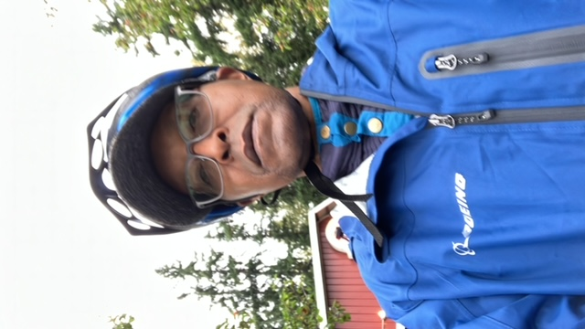

Claver Nitereka
Tel: (1) 425 2973000; E-mail: cnikaXX@gmail.com
Summary
I am an aerospace technical projects manager in Regulatory Administration and Airworthiness.
I have more than 26 years product development and certification.
Education
- MSC Structural Solid Mechanic, University of Sherbrooke, Qc, Canada
- BSC Structural Engineering, University of Tongji, Shanghai, China
Work Experience in Aerospace
- 2022-Present: Engineer Technical Project Manager
- Manage certification technical projects
- Support Engineering ODA Unit Members resolve certification technical issues
- Support the FAA to address certification identified issues
- Evaluate certification risks and propose mitigation solutions
- 2019-Present: Organization Designation Authority (ODA) Unit
- Responsible of approving certification technical data
- Approve projects certification plan and certification methods
- witness certification test and approve certification procedures
- 2007- Present: Structural Senior System Engineer
- Lead cross-functional team to develop and certify parts, assemblies and installation
- 1998- 2000: Structural Stress Analyst, Chrysler Automotive Research and Development
- Support Chassis and Suspension design development
- Support Certification Lab Test
Work Experience in Automotive
- 1998- 2007: Senior Structural Stress, Automotive Chassis
- Support Automovive SUVs & Pickups Chassis and Suspension design and certification
- Support Certification test
- Support part manufacturing and assembly
Skills
- More than 20 years experience in product development and certification.
- More than 20 years experience in product analysis and testing.
- More than 18 years leading cross functional Team.
- 2 years managing cross entreprise certification projects
Awards
- Employee of the Month multiple times
- 2 times employee of the year finalist
Hobbies
Biking, hicking, swimming, running, yard work, gardening, traveling, learning new technical skills

About Me
Contact Me
/ol>